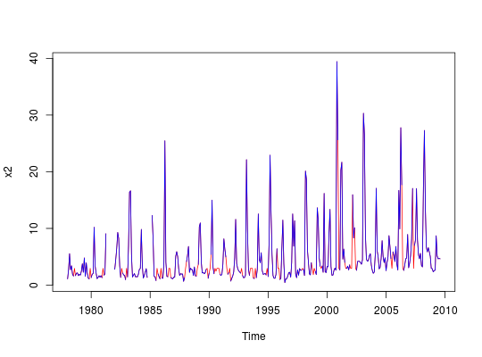
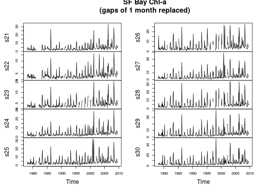

Imterpolates or substitutes missing data in a time series for gaps up to a specified size.
interpTs(x, type = c("linear", "series.median", "series.mean", "cycle.median", "cycle.mean"), gap = NULL)
| x | object of class |
|---|---|
| type | method of interpolation or substitution |
| gap | maximum gap to be replaced |
The time series with some or all missing values replaced.
When type = "linear", the function performs linear interpolation of
any NA runs of length smaller than or equal to gap. When
gap = NULL, gaps of any size will be replaced. Does not change
leading or trailing NA runs. This interpolation approach is best for
periods of low biological activity when sampling is routinely suspended.
When type = "series.median" or "series.mean", missing values
are replaced by the overall median or mean, respectively. This may be
desirable when missing values are not allowed but one wants, for example, to
avoid spurious enhancement of trends.
When type = "cycle.median" or type = "cycle.mean", missing
values are replaced by the median or mean, respectively, for the same cycle
position (i.e., same month, quarter, etc., depending on the frequency). This
may give more realistic series than using the overall mean or median.
Intended for time series but first three types will work with any vector or matrix. Matrices will be interpolated by column.
### Interpolate a vector time series and highlight the imputed data chl27 <- sfbayChla[, 's27'] x1 <- interpTs(chl27, gap = 3) plot(x1, col = 'red')lines(chl27, col = 'blue')x2 <- interpTs(chl27, type = "series.median", gap = 3) plot(x2, col = 'red')lines(chl27, col = 'blue')### Interpolate a matrix time series and plot results x3 <- interpTs(sfbayChla, type = "cycle.mean", gap = 1) plot(x3[, 1:10], main = "SF Bay Chl-a\n(gaps of 1 month replaced)")